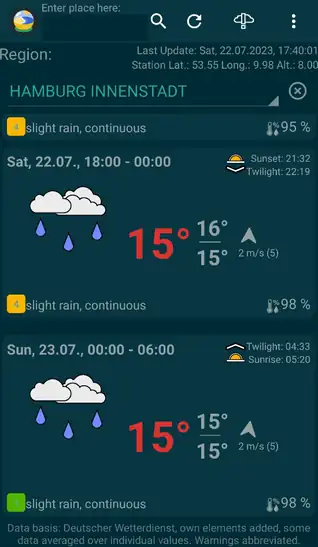

Tiny Weather Forecast Germany
إنترنت ومتصفحات
Detailed weather forecast for up to 10 days, based on open data of the Deutscher Wetterdienst (DWD). Weather warnings from the DWD are also displayed. The weather forecast of the desired weather station is displayed. Stations can be searched by name, by geo-coordinates or by the own location. A weat
✓ ترخيص مفتوح (GPL-3.0-or-later) · آخر تحديث: 2026-07-28
0.63.4الإصدار
7.2 MBالحجم
GPL-3.0-or-laterالرخصة
Open in Kanzتحميل APK (7.2 MB)
Download APK
SHA-256: bdb0f6165096c99dc8cafafe38021b22d985ebd8270d0c08f7b5d43cc7dfb066


تطبيقات تانية لنفس المطوّر (3)
More apps from this developer: de.kaffeemitkoffein
امسح الكود لفتح صفحة التطبيق
Scan to open this app page
لو كنز مش متثبت عندك: نزّل متجر كنز.
Not installed? Get the Kanz store.